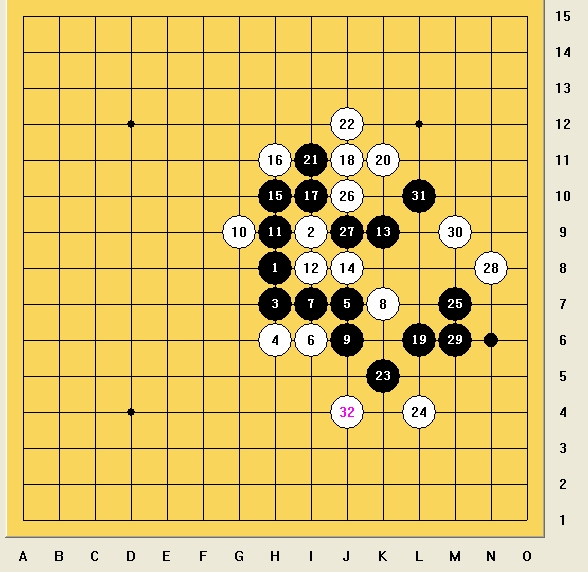

棋风杂谈
#1 <font color="red">棋风杂谈</font> 作者：小丸.net 发表时间：2011-9-14 18:36:58
其实一直想写这么一篇文章，关于棋风差异的。国内相关方面的文章相当少，似乎只有小天老师的-五子棋流派等文章有精彩论述。昨晚与曹冬拆棋更深切体会到棋风的差异性，有感而发写此文。文中观点仅代表作者本人的理解，举得例子是作者熟悉的，不可能也不必要涵盖所有高段棋手。要探讨棋风的问题，首先要谈五子棋里两个非常基本 原始的概念，进攻和防守。 由于其基础性，就象数学里集合的概念一样，似乎很难用完全精确无误的方式定义它们使得在一切情况下都适用，但是这丝毫不妨碍其应用和我们的讨论，因为每个棋手心里都有自己的判断，而且大部分棋手对一手棋究竟是进攻还是防守都有共同的看法。
其次，棋风究竟是一种什么东西呢？ 我认为棋风的差异性不体现在最后的VCT 或者VCF 上，因为一个确定有杀的局面，其杀法基本是确定的，就算有若干种杀法也不改变这一点，这从做各种习题可以看出来。那么棋风就应该体现在有变数的地方，最主要的是中盘以及后盘某些关键部分，或者是一个完全陌生的新局面，对局双方都没有任何事先研究的。下面让我们看些例子。
如图，一盘ORC的山口实战。19手之后，黑做了一个简单的VCT.白有多种选择。实战选择了J9这个点。原因在于算清黑右下局部无杀，J9攻守兼备拿到一个不错的先手对黑施压，更希望黑棋算不清在K5附近开攻，那么白会相当有利。总之20手是一种“柔和”或者有弹性的走法（关于什么是柔和，会在下面谈到）。自认为20已经足够积极。清清在旁观这盘棋的时候提出了她的想法，20下在K11,然后22走J12强抓33！！ 典型的进攻型走法，这个思路完全在我当时考虑范围之外。因为一个一般棋手在面对对手先手进攻的时候，往往本能反应是先防守或者防守中带进攻（就如实战20）。只有暴力进攻型棋手第一反应是以进攻对进攻，非常不错的思路，可惜白仍然无法必胜，最强演变如图：

非常激烈的交换之后，局面依然很复杂（黑还有更好的交换吗？） 总之，这种超激战并不符合白棋的构想，在实战中也是很难出现，但不失为一种很好的思路。与实战20并不能有绝对的优劣之分，只在于选择不同。另外，20也可直接防在K5，优点是没危险。缺点是白没任何先手，黑依然主动。这种思路多见于防守型棋手或初学者。
二 关于柔和
由上例可以看出，棋风的不同本质在于对进攻 防守的价值取向不同。对进攻型棋手来说，进攻可不仅仅是最后的VCT杀，而是整个技战术里极其重要的组成部分。他（她）可能利用进攻拓展棋形，展开优势。相反地，防守型棋手可能更注重和依赖于防守，在他们眼里防守是最主要获得优势的手段（经常有女棋手防死知名男棋手的事发生 ）。但是，进攻和防守是截然分开和对立的吗？答案当然是否定的，实际上很多棋都夹杂着进攻和防守。那么，“柔和”或者说“弹性”就几乎不可避免的出现了。那么什么是“柔和”呢？ 基本的来说，就是进攻和防守的有机结合。这个是因人因局面而异的。在这主要介绍吴镝老师的棋。过去并没深入学习过他的棋，总觉得他的棋不够“硬”。主要体现在防守上不象曹冬给人滴水不漏的感觉，我当时是无法理解的。那么现在一起来看一盘他近期的对局 2011浙江公开赛，由朱相如5段执黑对吴镝
）。但是，进攻和防守是截然分开和对立的吗？答案当然是否定的，实际上很多棋都夹杂着进攻和防守。那么，“柔和”或者说“弹性”就几乎不可避免的出现了。那么什么是“柔和”呢？ 基本的来说，就是进攻和防守的有机结合。这个是因人因局面而异的。在这主要介绍吴镝老师的棋。过去并没深入学习过他的棋，总觉得他的棋不够“硬”。主要体现在防守上不象曹冬给人滴水不漏的感觉，我当时是无法理解的。那么现在一起来看一盘他近期的对局 2011浙江公开赛，由朱相如5段执黑对吴镝
前20手都比较正常。21手断白棋眠三同时黑做棋，这里实际上黑并没有杀，22有多种选择。如果拿先手在上面攻不出还要回头来管21，比较尴尬。实战22属于柔和的一手，看上去纯防但是22附近如M6 K5 J4有多个做棋好点，让出表面先手，保留余味。28也值得提一下，如果是曹冬来防28，相信会防在类似H12这种点，彻底断掉黑往左边过度的可能，也很有压迫性，黑面临丢先。（曹冬的棋相当程度继承了中村的思想。这是一种基于先手理念的风格，某种程度上做到极致。姑且命名为中村流）。那么实战28是怎么考虑的呢？实战28只是防在右上角局部，并没先手。从这个意义上说，这手下弱了？实际上完全是这样么？在这据我分析吴镝正是不想要先手才下的这个28，如果直接下在H12黑感到了压力会去全力防白棋，白现在的优势未必足够赢。（温水煮青蛙 欲擒故纵也许？） 实战29并不是很好，也许下在更左边一点F10更强，细微差别在于F10可由F线过度到左下，G线恰恰被16破坏了。至34，白确立了一个相当大的先手，向下边过度，还是想利用22附近的余味。40手非常强，逼黑全部交换掉，46定型后，白非常优，但是黑暂时还可防。47无奈，48是一手跳出局部的妙棋，非看清全盘连接者根本下不出。这手棋首先客观上是一个偷袭，白形成的VCT是右上的抓（也许你会奇怪，没有48就不能抓了么。请自己算出或者摆一下自能明白，48还
#2 Re:棋风杂谈 作者：天籁之琴 发表时间：2011-9-14 18:50:10
原来还是沙发，明天再好好的看看，学习。。。#3 Re:棋风杂谈 作者：江南新绿 发表时间：2011-9-14 21:25:26
=======上图对应的爱五子棋谱代码如下，以便你拆解：========
h8i9h7h9j9i8j7j8k7i7i10h6g5k8i5h5h4j6g4f6g6g3f5i4e6d7e4d3e5e3d5c5f3g2g8g7e10
======================================================
这样是黑胜。
#4 Re:棋风杂谈 作者：小小亦默 发表时间：2011-9-14 22:01:02
改天看
#5 Re:棋风杂谈 作者：弱惜 发表时间：2011-9-14 22:02:21
右边的字看不到，还是我的网有问题呢。#6 Re:棋风杂谈 作者：一招惊心 发表时间：2011-9-15 10:03:40
高、实在是高！！！
#7 Re:棋风杂谈 作者：飞翔 发表时间：2011-9-15 14:59:30
强
［此帖子已被 飞翔 在 2011-9-15 16:27:04 编辑过］
#8 Re:棋风杂谈 作者：龍九囝 发表时间：2011-9-15 17:30:11
进攻才是王道［ 极地剑客 于 2011-9-15 20:18:37 时花20金币送鲜花一朵］
#9 Re:棋风杂谈 作者：没事摆石子玩 发表时间：2011-9-16 1:07:09
楼上看了半天 就悟出这么个理？#10 Re:棋风杂谈 作者：黑白之巅 发表时间：2011-9-16 11:45:41
好多，果断转走。。。
#11 Re:棋风杂谈 作者：慕容晓文 发表时间：2011-9-16 13:43:33
仅以本人对棋的理解而言，站在曹冬这边
对于眼下的国内赛事而言，“控制流”实际上要更占优一些。因为“中村流”需要依靠大量的计算，但是每方时限很短，显然不适宜有过量的计算，而控制流由于短兵相接的几率大大下降，因此对于计算力的要求显然也下降了不少~~~~~~
同样，正如楼主所言，“控制流”棋往往优势不足以制胜。目前“控制流”有优势在于赛制时间少，因此对手容易出错，若比赛时限恢复到90分钟，“控制流”的优势就将大大缩小，为什么呢？
从比赛角度而言，只要局面不是有必胜、必败的定论的，仅靠中盘作战，双方都不犯错的结果必然是和棋。“控制流”的优势在于（如楼主的倒数第三图），说21后不论双方各有5分钟还是50分钟，黑棋不会败，估计大多数都会相信，因为白棋实在乏善可陈。但是，对于白棋而言则不然，5分钟和50分钟的防守难度不可同日而语啊~~~~
因此，时间约充足，对于“中村流”越有利，对于“控制流”越不利
举例而言：
在目前45+30的比赛中，如果比赛中遇到某局面，判断自己可能有VCT，此时自己用时刚到15分钟，局面到40手，那么己方应该还有35分钟。这个VCT很长，大约需要黑白共25手左右，单色13手，只有算清的情况下才可能去追胜，在开始计算时就必须预留10分钟做保留时间，那么实际计算时间只有25分钟，25分钟内在重大赛事中算清单色13手左右的VCT？
能算清单色13手VCT的棋手有很多，谁能确保25分钟？估计安度或者中村在巅峰状态下可能吧？
25分钟内没算出来，怎么办？只能错过这个机会了……也许多给一些时间你就能算到了，因此错失胜局很可惜吧？当然，这个例子可能有些夸张，但却足以说明一些问题。“控制流”自然不需要这么长时间来计算了，因为不需要这么长的VCT
呵呵，个人看法~~~
［ 珠子 于 2011-9-18 21:00:36 时花20金币送鲜花一朵］
［ 小红眼镜 于 2011-9-18 21:18:58 时花20金币送鲜花一朵］
#12 Re:棋风杂谈 作者：怪 发表时间：2011-9-17 11:55:18
控制流高手追求的是传说中的vc2
不知vc1会是啥流。。。
#13 Re:棋风杂谈 作者：一期一会 发表时间：2011-9-17 19:15:02
悲剧的发现，我选了标“稳”的那个点。。。。。。#14 Re:Re:棋风杂谈 作者：小红眼镜 发表时间：2011-9-18 21:20:39
引用：
原文由 慕容晓文 发表于 2011-9-16 13:43:33 :仅以本人对棋的理解而言，站在曹冬这边
对于眼下的国内赛事而言，“控制流”实际上要更占优一些。因为“中村流”需要依靠大量的计算，但是每方时限很短，显然不适宜有过量的计算，而控制流由于短兵相接的几率大大下降，因此对于计算力的要求显然也下降了不少~~~~~~
同样，正如楼主所言，“控制流”棋往往优势不足以制胜。目前“控制流”有优势在于赛制时间少，因此对手容易出错，若比赛时限恢复到90分钟，“控制流”的优势就将大大缩小，为什么呢？
从比赛角度而言，只要局面不是有必胜、必败的定论的，仅靠中盘作战，双方都不犯错的结果必然是和棋。“控制流”的优势在于（如楼主的倒数第三图），说21后不论双方各有5分钟还是50分钟，黑棋不会败，估计大多数都会相信，因为白棋实在乏善可陈。但是，对于白棋而言则不然，5分钟和50分钟的防守难度不可同日而语啊~~~~
因此，时间约充足，对于“中村流”越有利，对于“控制流”越不利
举例而言：
在目前45+30的比赛中，如果比赛中遇到某局面，判断自己可能有VCT，此时自己用时刚到15分钟，局面到40手，那么己方应该还有35分钟。这个VCT很长，大约需要黑白共25手左右，单色13手，只有算清的情况下才可能去追胜，在开始计算时就必须预留10分钟做保留时间，那么实际计算时间只有25分钟，25分钟内在重大赛事中算清单色13手左右的VCT？
能算清单色13手VCT的棋手有很多，谁能确保25分钟？估计安度或者中村在巅峰状态下可能吧？
25分钟内没算出来，怎么办？只能错过这个机会了……也许多给一些时间你就能算到了，因此错失胜局很可惜吧？当然，这个例子可能有些夸张，但却足以说明一些问题。“控制流”自然不需要这么长时间来计算了，因为不需要这么长的VCT
呵呵，个人看法~~~
［ 珠子 于 2011-9-18 21:00:36 时花20金币送鲜花一朵］
［ 小红眼镜 于 2011-9-18 21:18:58 时花20金币送鲜花一朵］
 刚送鲜花的时候。。。没有注意。。电脑上默认登录了曹冬大神的号。。。咳咳。。结果帮曹冬大神送了一朵鲜花。。哈哈。不过想来他也愿意送的哈哈
刚送鲜花的时候。。。没有注意。。电脑上默认登录了曹冬大神的号。。。咳咳。。结果帮曹冬大神送了一朵鲜花。。哈哈。不过想来他也愿意送的哈哈
#15 Re:棋风杂谈 作者：一尘 发表时间：2011-9-21 16:06:52
楼上的MM貌似被谁欺负了的样子。。。
#16 Re:棋风杂谈 作者：江西ゞ云格格 发表时间：2011-9-25 18:07:23
不太会下棋。。感觉应该是对付比自己强的对手就是要死守。。对棋力相当的看情况攻。。比自己弱点的就攻好了。。不过面对自己强的棋手我常感觉无能为力。。